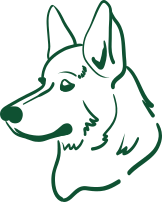

Frohe Weihnachten & willkommen
Besucht uns online: Trainingsangebote, Termine und alles rund um unseren Hundesportverein – einfach den Code scannen.

🎄 Scannen & entdecken 🐾
schaeferhundeverein-heidelberg.de
Verein für Deutsche Schäferhunde · OG Heidelberg und Dossenheim e.V. · gegr. 1922